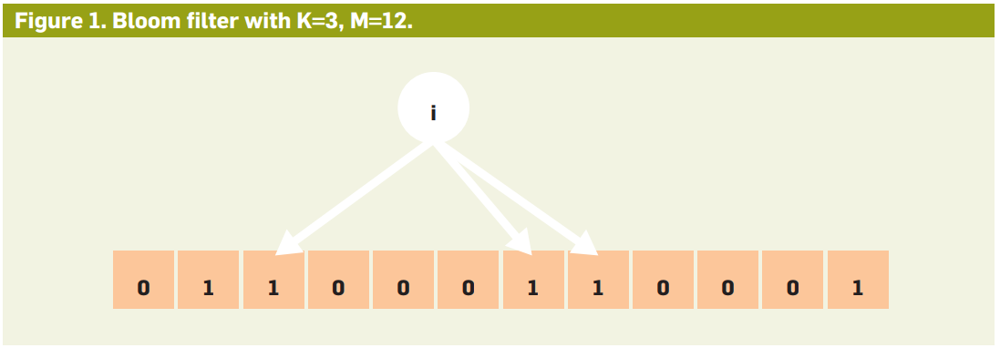
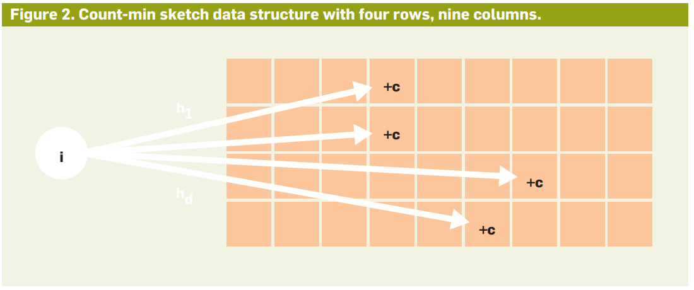

4.1k words in total, 16 minutes required. 本文是根据Ding et al.在KDD20发布的tutorial[1][2]以及Cormode在Communications of the ACM发布的文章[3]整理而成。 背景Big Data的三大问题是speed，cost和scale。Scale的问题随着各类分布式系统的出现，已经得到了一定的解决。Speed和cost的问题，必须通过对数据进行更加进阶的处理，才能更好地实现亚秒级的延迟，当然in-memory和更加高效的计算硬件都是有效的措施。Data Sketching（DS）也正是在这一背景下孕育而生的。一些热点的DS问题，包括couting distinct items，qualitiles，histograms，heavy hitters，和大型的聚合操作。 DS技术不能保证应对所有的query processing，但是可以处理其一个子集。Sketching可抽象为三个过程： Summarization，将数据转换为一个随机过程，保持能够回答一个子集问题的答案； Encoding，找到一个随机过程在小空间和高效的sketch上的表达； Estimation，从sketch中抽取答案并分析误差； DS的代价： Coping with the vast scale of information means making compromises: The description of the world is approximate rather than exact; the nature of queries to be answered must be decided in advance rather than after the fact; and some questions are now insoluble. DS方法简单采样仅通过采样（sampling）保留部分信息： uniform random sampling 其他类型的sampling技术 对于随机均匀采样而言，其导致的误差大致为$1/\sqrt{s}$，其中$s$表示采样的大小。采样越为频繁或采样数目越大，则误差越小。对于批量数据而言，可以用标准随机数来采样；而对于流数据而言，可以以概率$p$对item的采样可能性进行随机。 对于流数据而言，使用$p$来采样，随着时间推移将产生一个比较大的$s$：一种解决办法是给每个record一个随机数，在采样中仅维护$s$个最小随机数的records，以保证固定数量的采样。 采样并非万能的，例如当我们需要统计某个个体是否在目标集合中时，那么可能需要借助于布隆过滤器（以下进行介绍），因为采样可能会将我们关注的个体筛除—从而导致不正确的结果；再如，需要对某个特定的类别进行计数时，采样显然是不合时宜的，这个时候可以考虑Hyperloglog技术；再比如，需要对数据频度进行分析时，可以采用Count-Min sketch，这样的误差率从$1/\sqrt{s}$可以极大提高到$1/s$，当然，其牺牲在于，需要事先指定某个特定的用于频度分析的目标属性。 采样被认为是最为灵活也最为直接的一种DS方法。 布隆过滤器布隆过滤器（Bloom Filter，BF）可以用于检索一个元素是否在一个集合中（membership question）—“某样东西一定不存在或者可能存在”。它的优点是空间效率和查询时间都远远超过一般的算法，缺点是有一定的误识别率和删除困难[7]。 布隆过滤器的长度为$M$，对于一个incoming data item，它可以使用$K$个hash函数将其映射到$M$长度的过滤器的$K$个bit上并将其置为1。给定一个新的item，如果它经过$K$个hash函数映射，在布隆过滤器上对应的某个bit上得到了0，则说明该item之前一定没有被映射过。反过来，我们只能说这个item可能存在，因为布隆过滤器上特定的bit可能会被多个items复写。示例如图1所示。 图1：BF的示例 很显然，过小长度$M$的布隆过滤器很快所有的bit位都会被置为1，那么查询任何值都会返回”可能存在”，起不到过滤的目的了。布隆过滤器的长度会直接影响误报率，布隆过滤器越长其误报率越小。 当布隆过滤器有$N$个items时，得到一个false postive的可能性约为[4] 当然，从实践角度出发，我们更应该知道的是如何选择最优的$K$值。理论上使得false positive最小的$K$可以计算为$K = (M/N) ln2$。博客[4]中给出了举例： 如果比特数组大小是过滤器中元素数量的4倍（也就是$M/N$ = 4），那么哈希函数数量为3（实际为2.77四舍五入）的时候，误报率（14.7%）相对较低。 如果比特数组大小是过滤器中元素数量的6倍（也就是$M/N$ = 6），那么哈希函数数量为4（实际为4.16四舍五入）的时候，误报率（5.61%）相对较低。 如果比特数组大小是过滤器中元素数量的8倍（也就是$M/N$ = 8），那么哈希函数数量为6（实际为5.55四舍五入）的时候，误报率（2.16%）相对较低。 更数学形式的推导可见[5]。 哈希函数应该尽可能保证数据分布均匀，此外，为了保证运行效率，应该选择尽可能快的哈希函数，比如：murmurhash、FNV，至于md5、sha1等等，并不是好的选择[7]。 布隆过滤器的删除操作虽然布隆过滤器简单好用，但是它也有自己的缺点：不支持删除元素。原因是如果删除元素，那么需要把元素对应的若干个索引位置的值从1置为0，可是这些索引位置可能关系到别的元素，一旦置为0，所有的相关元素都会被删除。如果你使用布隆过滤器，并且需要删除元素的话，那么你只能删除元素后重建整个数据结构[5]。 也有一些对应的解决方案：Counting BF（CBF）将标准BF的bit数组的每一位扩展为一个小的计数器（counter），在插入元素时给对应的$K$（$K$为哈希函数个数）个counter的值分别加1，删除元素时给对应的$K$个counter的值分别减 1。CBF通过多占用几倍的存储空间的代价，给BF增加了删除操作。在文章[6]中对counter的位数进行了说明，并解释4位的counter在实践中有效。 CBF虽说解决了BF的不能删除元素的问题，但是自身仍有不少的缺陷有待完善，比如counter的引入就会带来很大的资源浪费，CBF的false positive还有很大可以降低的空间。SBF（Spectral BF）在CBF的基础上提出了元素出现频率查询的概念，将CBF的应用扩展到了multi-set的领域；dlCBF（d-Left Counting BF）利用d-left hashing的方法存储 fingerprint，解决哈希表的负载平衡问题；ACBF（Accurate Counting BF）通过offset indexing的方式将counter数组划分成多个层级，来降低误判率[6]。 布隆过滤器的运用 BFs are at their most attractive when the consequence of a false positive is not the introduction of an error in a computation, but rather when it causes some additional work that does not adversely impact the overall performance of the system. Many of these applications have the flavor of the preceding example: the filter gives a fast answer to lookup queries, and positive answers may be double-checked in an authoritative reference. Many large distributed databases (Google’s Bigtable, Apache’s Cassandra and HBase) use BFs as indexes on distributed chunks of data. They use the filter to keep track of which rows or columns of the database are stored on disk, thus avoiding a (costly) disk access for non-existent attributes. Count-Min SketchCount-Min主要用以应对计数问题：设想需要在高速海量的数据中对多个类别的item的数量进行统计，可能需要对每个item维护一个counter，但是这一效率可能非常低下。文章[3]对Count-Min的特性解释如下： It encodes a potentially massive number of item types in a small array. The guarantee is that large counts will be preserved fairly accurately, while small counts may incur greater (relative) error. This means it is good for applications where you are interested in the head of a distribution and less so in its tail. 图2给出了一个Count-Min具体实施的过程，Count-Min也使用了一个array和一系列hash函数，但是其和BF在逻辑上有很大的区别。如图所示，相当于每个hash函数将一个item映射到一行array的特定位置，并给对应的位置加上数量。可知，Count-Min中不允许hash函数将数据映射到相同的range上，而是分别的。 图2：Count-Min的示例 当需要对最终某个item的数量进行统计时，我们需要检查每一行对应的计数器，可以发现，由于不同的hash函数在不同行可能会把不同item映射到同一个bit上导致一定偏差。我们通常只需要把最小的counter拿出来作为计数依据即可。这就是名称Count-Min的由来。 乍一看，Count-Min可能会导致偏高的估计结果。然后从数学上可以发现，每多增加一行使得bad estimate的几率减半，而同样提升每行array的size则使得estimate的噪声减半。这些优良特性，使得一个size为$s$的sketch，其错误率和$1/s$成比例。 Count-Min的运用 Count-Min sketches are best suited for handling a slight inflation of frequency. The sketches are very good for tracking which items exceed a given popularity threshold, however. In particular, while the size of a Bloom filter must remain proportional to the size of the input it is representing, a Count-Min sketch can be much more compressive: its size can be considered to be independent of the input size, depending instead on the desired accuracy guarantee only. 以上的论述中提到，Count-Min的大小和输入的数据规模可以无关，而是由需要的准确率保证来决定的。具体地，假定准确率保证为$\varepsilon$，则我们只需要一个sketch size为$1/\varepsilon$大小的Count-Min即可，并不会改变数据处理的特性。 Count-Min主要用于各类items的频数的统计的场景，例如twitter中统计转发的网站的数量，或者通讯网络中统计哪些服务器URL是最为热门的，等等。 HyperLogLog (HLL)HLL是解决distinct counting或者基数计数（cardinality counting）的重要技术。随着被count对象的增加（集合变大），space会不断增长，判断集合元素是否冗余的代价也会增大。即便使用BF也会造成空间的线性增加，在需要保证一定准确率的条件下。这一方法的思想是通过hash函数使得重复的item被同等对待。 HLL是基于LogLog Counting (LLC)来实现的，LLC的步骤[8]： 通过hash函数计算输入值对应的比特串（相同值的比特串相同） 比特串的低$t$位对应的数字用来找到数组$S$中对应的位置$i$（这个类似于依靠低$t$位来设置不同的分桶，以各分桶的计数综合决定结果以降低偏差） $t+1$位开始找到第一个1出现的位置$k$，将$k$记入数组$S_i$位置（第一个1出现的位置表明了） 基于数组$S$记录的所有数据的统计值，计算整体的基数值，计算公式可以简单表示为：$\hat{n} = f(S)$ 假定一个元素经过hash后得到长度为$L$的bit串，由于元素是服从均匀分布的，则其每一位为1或者为0的概率都为0.5。在这一情况下，我们忽略$L/2$的0位，则我们可以把最大的1出现的位置，令为$\rho$，用于估算所有hash后不同元素的基数，即为$2^\rho$。一个关于抛硬币的数学例子可以参见[8]。 Apply a hash function g to each item i, with the same distribution: g maps items to j with probability $2^{−j}$ (say, by taking the number of leading zero bits in the binary expansion of a uniform hash value). 假设和理论在使用LLC之前需要选取一个哈希函数$H$应用于所有元素，然后对哈希值进行基数估计。$H$必须满足如下条件（定性的）[8]： $H$的结果具有很好的均匀性，也就是说无论原始集合元素的值分布如何，其哈希结果的值几乎服从均匀分布（完全服从均匀分布是不可能的，但是很多哈希函数可以生成几乎服从均匀分布的结果，这里我们忽略这种理论上的差异，认为哈希结果就是服从均匀分布）。 $H$的碰撞几乎可以忽略不计。也就是说我们认为对于不同的原始值，其哈希结果相同的概率非常小以至于可以忽略不计。 $H$的哈希结果是固定长度的。 如果直接使用上面的单一估计量进行基数估计，会由于偶然性而存在较大误差。因此，LLC采用了分桶平均的思想来消减误差。具体来说，就是将哈希空间平均分成$m$份，每份称之为一个桶（bucket）。对于每一个元素，其哈希值的一部分比特作为桶编号。桶编号相同的元素被分配到同一个桶，在进行基数估计时，首先计算每个桶内元素最大的第一个1的位置，设为$M[i]$，然后对这$m$个值取平均后再进行估计，这相当于物理试验中经常使用的多次试验取平均的做法，可以有效消减因偶然性带来的误差。 HLL的基本思想是在LLC的基础上做改进：一个改进是使用调和平均数（harmonic mean）替代几何平均数。注意LLC是对各个桶取算数平均数，而算数平均数最终被应用到2的指数上，所以总体来看LLC取得是几何平均数。调和平均数的优点是，克服数据的倾斜带来的影响（例如分桶后出现了很多空桶）。多个使用HLL统计出的基数值可以融合[9]。 HLL的运用 One example of HLL’s use is in tracking the viewership of online advertising. Across many websites and different advertisements, trillions of viewevents may occur every day. Advertisers are interested in the number of “uniques”: how many different people (or rather, browsing devices) have beenexposed to the content. Use of HLL sketches allows this kind of query to be answered directly by combining the two sketches rather than trawling through the full data. HLL还可以用于分析log这种复杂的流，以及对社交网络中用户交互的分布进行去重的统计等。 其他（进阶）DS技术典型的一个DS技术是对于数据特别是复杂的稀疏的张量数据进行维度降低（dimensionality reduction），例如PCA。当然，PCA的问题可能是计算复杂，要找到对应的特征向量。 另一个进阶的DS技术是randomized numerical linear algebra （given a matrix, one first compresses it to a much smaller matrix by multiplying it by a (usually) random matrix with certain properties），简单而言是通过对矩阵进行sketch来降低线性代数计算的代价，比如在矩阵乘法中找到左边矩阵的更小的行表示和右边矩阵的更小的列的表示。一般而言，这类技术也可以在大规模实体上取得不错效果，对于小矩阵实体的效果要差一些。再比如说回归问题中，要最小化代价$||\mathbf{A}\mathbf{x} - \mathbf{b}||$，可以考虑对$\mathbf{A}$进行sketch。一个survey可以参考[10]。 对图和几何数据的DS技术也被提出。例如，可以对图中结点的邻接信息进行sketch，从而把connectivity和spanning tree的信息给有效提取。这意味着图中很多的信息可以被舍弃。 对于几何数据，DS可和clustering进行挂钩，即对数据进行聚类后保留数据的总体结构信息，保留对整体数据密度分布的关键信息。 扩展阅读1.Data Sketching for Real Time Analytics: Theory and Practice. ↩2.https://www.youtube.com/watch?v=WUOYVIL_-vg. ↩3.https://dl.acm.org/doi/10.1145/3080008. ↩4.https://blog.huoding.com/2020/06/22/825. ↩5.http://pages.cs.wisc.edu/~cao/papers/summary-cache/node8.html. ↩6.https://cloud.tencent.com/developer/article/1136056. ↩7.https://zhuanlan.zhihu.com/p/43263751. ↩8.https://www.yuque.com/abser/aboutme/nfx0a4. ↩9.https://cn.kyligence.io/blog/count-distinct-hyperloglog/. ↩10.Sketching as a tool for numerical linear algebra. ↩ ← Previous Post Next Post→ Table of Contents 背景DS方法简单采样布隆过滤器布隆过滤器的删除操作布隆过滤器的运用Count-Min SketchCount-Min的运用HyperLogLog (HLL)假设和理论HLL的运用其他（进阶）DS技术扩展阅读